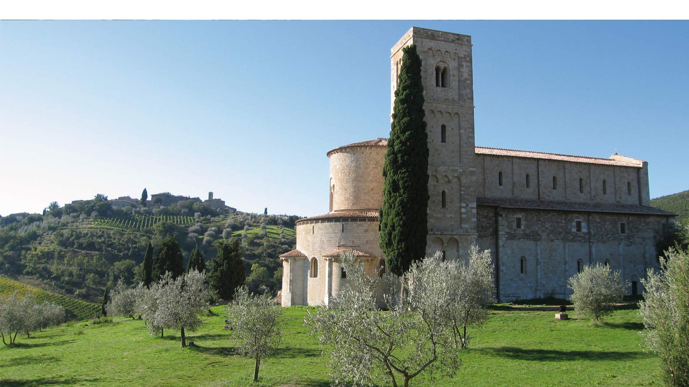

Esercizio 1:
Per lo svolgimento di questo esercizio ho iniziato a costruire i vari piani della della struttura. Questa Abbazia non ha più di un piano, per cui in questa fase ho costruito la base dell'intero edificio e l'intero tetto. Nonostante questo un piano fittizio può essere individuato dalle colonne che sono leggermente visibili anche dall'esterno. La costruzione dei piani, ad eccezione della base costruita con una griglia, è stata fatta riproducendo la superficie bidimensionale e resa poi tridimensionale con l'utilizzo della funzione Quote. In questo esercizio la scala è 1 metro = 1 unità, successivamente l'edificio verrà scalato.

Secondo Homework di Grafica Computazionale
Name: Amir
Secondo Homework di Grafica Computazionale
Name of the building: Abbazia di Sant'Antimo (Siena)
Link: info
Name: Amir
Surname: Salama
University ID: 441484
Note:Segue l'esposizione del secondo homework, con i link al codice sorgente e le note per i rispettivi esercizi. In fondo alla pagina sono mostrate alcune immagini dell'Abbazia e del lavoro svolto.
Homework
Esercizi svolti
Esercizio 2:
Questo esercizio ha visto unire assieme i piani verticali e quelli orizzontali, definendo un modello 3D accurato e provvisto della finestra principale nonché del portone di ingresso. In questa fase non è presente il colonnato interno.Esercizio 3:
Finalmente l'edificio è completo. Il modello 3D è comprensivo di tutte le sue componenti: piani di costruzione, 4 facciate, tetto, interni, torre. Gli interni sono stati colorati di rosso per poterli notare più facilmente. Oltre al completamento del modello, in questo esercizio sono stati creati alcuni edifici di contorno con finestre e portone di ingresso e delle strade che permettono il raggiungimento della chiesa e delle abitazioni.Esercizio 4:
Questo esercizio ha portato un evoluzione particolare al "progetto". L'area in questione è stata arredata da panchine, lampioni, due parcheggi con le opportune strisce e il relativo cartello di segnalazione, un monumento e alberi predisposti intorno alla chiesta.